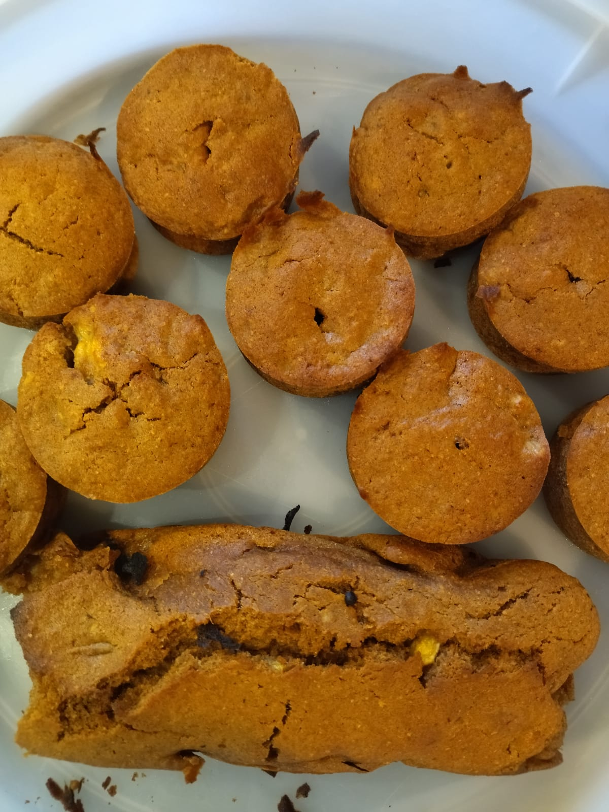

Banana Cake

Description
Dilma would say that the Manioc made us begin civilized humans, I would say it was banana. Banana is the base of every brazilian. We eat everything with bananas, farofa, cakes, even rice and beans
And who doesn't love a good banana cake in the afternoon with a cup of coffee? So, I introduce you to the traditional banana cake from Brazil (in it's vegan version, of course.)
Let's go to the recipe!
Ingredients
- 480ml of floor
- 200ml of coconut sugar
- 1 tablespoon of yeast
- 180ml of water
- 120ml of oil
- 1 tablespoon of cinnamon
- 480ml of mashed banana
- A bit of salt
Steps
- Turn on the oven to 180 degrees
- In a bowl, mix the floor, the sugar, salt and the yeast
- Add the bananas, oil and water and mix it slowly
- Put in a cake tin with a hole(previously greased with oil and flour)
- Put in the oven for 40mins or until it golden